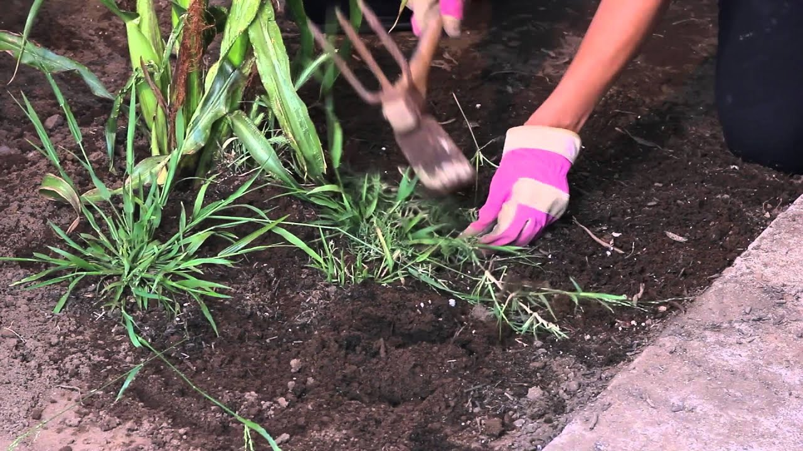

Jennifer Newsome
Homework 1
Caring for Corn
- Hoe or till the soil just under the surface. Hoe the weeds off just below the soil’s surface. Deep hoeing will cut the corn roots, which are close to the top of the soil.
- When the plants are about 2 feet tall, apply 1 cup of fertilizer for every 10 feet of garden row. Scatter the fertilizer evenly between the rows and mix it lightly with the soil. Water after fertilizing

Previous | Next